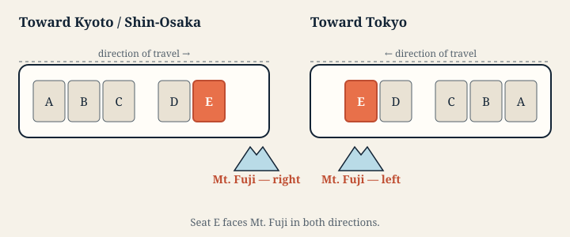

看哪一側？ 往京都或新大阪時，富士山在 右側 — E座。回東京時則在 左側，座位字母仍是E。座位字母不會隨行車方向改變；富士山只是位於鐵路北側。
綠色車廂。 對應的靠窗座位是 D座。
能看多久？ 新富士站前後，約3至4分鐘。
周遊券實際可搭乘哪些列車
東海道新幹線的三種列車共用同一條鐵路，所以窗外景色相同。差別在於停站次數，以及何時抵達富士山旁。
- 希望號 ——最快、停站最少。周遊券持有人須 另購專用車票 才能搭乘。
- 光號 — 包含在周遊券內。停站稍多。
- 回聲號 — 包含在周遊券內。各站皆停，包括新富士站。
回聲號是前往京都最慢的列車，卻很適合看富士山：它停靠新富士站，列車停穩時，山就留在窗旁。
慢車，會停在風景旁
幾處精彩車窗景色就在車站旁。列車越快，能看的時間越短；搭希望號時往往幾秒就掠過，搭回聲號卻能停下來看。
掛川城 就是最明顯的例子。白色天守距掛川站步行不遠，目前時刻表中， 有62班回聲號停靠掛川，光號與希望號則完全不停。高速通過時，城堡在車站前後分兩段出現，合計只有十多秒。回聲號進站時，城堡則可在窗外停留約 半分鐘，時而被建築遮住、時而再出現，接著列車就停下來了。 小田原城 也是如此：回聲號與部分光號會停靠小田原站。
所以，這不只是用較慢速度換取較低費用。日本鐵路周遊券讓你搭上那些會停在幾處精彩車窗景色旁的列車。

各班列車的富士山時間
以下列車都可使用日本鐵路周遊券，而且每班都 停靠新富士站。這裡列的是該站的實際預定時刻，不是平均值。各班列車的時間差，甚至比觀景窗口還長，平均時間反而容易誤導。
選擇列車編號 ，開啟該班列車的車窗時間軸。沿途景色、時間與座位側別，皆依該班時刻表計算。
往京都、新大阪
富士山在 右側，選擇 E座。這裡的列車都停新富士站，列車停穩時即可看山。
| 列車 | 出發站 | 發車 | 新富士站時刻 | 已乘車時間 |
|---|---|---|---|---|
| 回聲801號 | 東京 | 06:30 | 07:39 | 69分鐘 |
| 回聲803號 | 東京 | 06:57 | 08:07 | 70分鐘 |
| 回聲805號 | 東京 | 07:27 | 08:37 | 70分鐘 |
| 回聲807號 | 東京 | 07:57 | 09:07 | 70分鐘 |
| 回聲809號 | 東京 | 08:27 | 09:37 | 70分鐘 |
| 回聲811號 | 東京 | 08:57 | 10:07 | 70分鐘 |
| 回聲813號 | 東京 | 09:27 | 10:37 | 70分鐘 |
| 回聲815號 | 東京 | 09:57 | 11:07 | 70分鐘 |
| 回聲817號 | 東京 | 10:27 | 11:37 | 70分鐘 |
| 回聲819號 | 東京 | 10:57 | 12:08 | 71分鐘 |
| 回聲821號 | 東京 | 11:27 | 12:37 | 70分鐘 |
| 回聲823號 | 東京 | 11:57 | 13:08 | 71分鐘 |
| 回聲825號 | 東京 | 12:27 | 13:37 | 70分鐘 |
| 回聲827號 | 東京 | 12:57 | 14:08 | 71分鐘 |
| 回聲829號 | 東京 | 13:27 | 14:37 | 70分鐘 |
| 回聲831號 | 東京 | 13:57 | 15:08 | 71分鐘 |
| 回聲833號 | 東京 | 14:27 | 15:37 | 70分鐘 |
| 回聲835號 | 東京 | 14:57 | 16:08 | 71分鐘 |
| 回聲837號 | 東京 | 15:27 | 16:37 | 70分鐘 |
| 回聲839號 | 東京 | 15:57 | 17:08 | 71分鐘 |
| 回聲841號 | 東京 | 16:27 | 17:37 | 70分鐘 |
| 回聲843號 | 東京 | 16:57 | 18:08 | 71分鐘 |
| 回聲845號 | 東京 | 17:27 | 18:37 | 70分鐘 |
| 回聲847號 | 東京 | 17:57 | 19:08 | 71分鐘 |
| 回聲849號 | 東京 | 18:27 | 19:37 | 70分鐘 |
| 回聲851號 | 東京 | 18:57 | 20:08 | 71分鐘 |
| 回聲853號 | 東京 | 19:27 | 20:37 | 70分鐘 |
| 回聲855號 | 東京 | 19:57 | 21:07 | 70分鐘 |
| 回聲857號 | 東京 | 20:27 | 21:35 | 68分鐘 |
| 回聲909號 | 東京 | 21:15 | 22:25 | 70分鐘 |
| 回聲911號 | 東京 | 21:45 | 22:48 | 63分鐘 |
| 回聲913號 | 東京 | 22:12 | 23:11 | 59分鐘 |
往東京
富士山在 左側，同樣選擇 E座。
| 列車 | 出發站 | 發車 | 新富士站時刻 | 已乘車時間 |
|---|---|---|---|---|
| 回聲904號 | 靜岡 | 06:22 | 06:35 | 13分鐘 |
| 回聲908號 | 濱松 | 06:20 | 06:56 | 36分鐘 |
| 回聲912號 | 靜岡 | 07:02 | 07:13 | 11分鐘 |
| 回聲914號 | 濱松 | 06:43 | 07:22 | 39分鐘 |
| 回聲918號 | 濱松 | 06:55 | 07:47 | 52分鐘 |
| 回聲800號 | 岐阜羽島 | 06:30 | 08:22 | 112分鐘 |
| 回聲802號 | 名古屋 | 07:38 | 09:10 | 92分鐘 |
| 回聲804號 | 名古屋 | 08:08 | 09:41 | 93分鐘 |
| 回聲806號 | 名古屋 | 08:38 | 10:13 | 95分鐘 |
| 回聲808號 | 新大阪 | 07:54 | 10:41 | 167分鐘 |
| 回聲810號 | 名古屋 | 09:38 | 11:10 | 92分鐘 |
| 回聲812號 | 新大阪 | 08:54 | 11:41 | 167分鐘 |
| 回聲814號 | 名古屋 | 10:38 | 12:13 | 95分鐘 |
| 回聲816號 | 新大阪 | 09:54 | 12:41 | 167分鐘 |
| 回聲818號 | 名古屋 | 11:38 | 13:10 | 92分鐘 |
| 回聲820號 | 新大阪 | 10:54 | 13:41 | 167分鐘 |
| 回聲822號 | 名古屋 | 12:38 | 14:13 | 95分鐘 |
| 回聲824號 | 新大阪 | 11:54 | 14:41 | 167分鐘 |
| 回聲826號 | 名古屋 | 13:38 | 15:10 | 92分鐘 |
| 回聲828號 | 新大阪 | 12:54 | 15:41 | 167分鐘 |
| 回聲830號 | 名古屋 | 14:38 | 16:11 | 93分鐘 |
| 回聲832號 | 新大阪 | 13:54 | 16:41 | 167分鐘 |
| 回聲834號 | 名古屋 | 15:38 | 17:11 | 93分鐘 |
| 回聲836號 | 新大阪 | 14:54 | 17:41 | 167分鐘 |
| 回聲838號 | 名古屋 | 16:38 | 18:11 | 93分鐘 |
| 回聲840號 | 新大阪 | 15:54 | 18:41 | 167分鐘 |
| 回聲842號 | 名古屋 | 17:38 | 19:11 | 93分鐘 |
| 回聲844號 | 新大阪 | 16:54 | 19:41 | 167分鐘 |
| 回聲846號 | 名古屋 | 18:38 | 20:13 | 95分鐘 |
| 回聲848號 | 新大阪 | 17:54 | 20:41 | 167分鐘 |
| 回聲850號 | 名古屋 | 19:38 | 21:05 | 87分鐘 |
| 回聲852號 | 新大阪 | 18:54 | 21:41 | 167分鐘 |
| 回聲854號 | 名古屋 | 20:46 | 22:21 | 95分鐘 |
搭光號？開啟你的列車時間軸
光號不停靠新富士，經過富士山時沒有停站時刻可直接引用，因此我們不會憑空給一個時間。開啟你的班次，導覽會依該班時刻表計算通過時間。
往京都、新大阪
- 光631號 東京出發
- 光633號 東京出發
- 光635號 東京出發
- 光637號 東京出發
- 光639號 東京出發
- 光641號 東京出發
- 光643號 東京出發
- 光645號 東京出發
- 光647號 東京出發
- 光649號 東京出發
- 光651號 東京出發
- 光653號 東京出發
- 光655號 東京出發
- 光657號 東京出發
- 光659號 東京出發
- 光661號 東京出發
- 光663號 東京出發
- 光665號 東京出發
- 光667號 東京出發
- 光669號 東京出發
- 光701號 東京出發
- 光703號 東京出發
- 光705號 東京出發
- 光707號 東京出發
- 光709號 東京出發
- 光711號 東京出發
- 光713號 東京出發
- 光715號 東京出發
- 光717號 東京出發
- 光719號 東京出發
- 光721號 東京出發
- 光733號 新橫濱出發
往東京
- 光630號 名古屋出發
- 光632號 名古屋出發
- 光634號 新大阪出發
- 光636號 新大阪出發
- 光638號 新大阪出發
- 光640號 新大阪出發
- 光642號 新大阪出發
- 光644號 新大阪出發
- 光646號 新大阪出發
- 光648號 新大阪出發
- 光650號 新大阪出發
- 光652號 新大阪出發
- 光654號 新大阪出發
- 光656號 新大阪出發
- 光658號 新大阪出發
- 光660號 新大阪出發
- 光662號 新大阪出發
- 光664號 新大阪出發
- 光666號 新大阪出發
- 光668號 新大阪出發
- 光700號 廣島出發
- 光702號 岡山出發
- 光704號 岡山出發
- 光706號 岡山出發
- 光708號 岡山出發
- 光710號 岡山出發
- 光712號 岡山出發
- 光714號 岡山出發
- 光716號 岡山出發
- 光718號 岡山出發
- 光720號 岡山出發
- 光722號 岡山出發
上車之前
普通車廂中，E座是富士山側的靠窗座位。預約指定席時可先選好；日本鐵路周遊券包含適用光號與回聲號班次的指定席預約，不另加收費用。持周遊券搭希望號，須另購專用車票。最新使用條件與票價請查官方資料： japanrailpass.net 與 JR Central。如果E座已滿，請不要站到別人的座位旁。也可以從A座留意短暫出現的左富士，或欣賞兩側都能看到的濱名湖。
富士山藏起來時
富士山經常藏在雲裡，晴朗的冬日早晨機會最好。但旅程不會因此失色：同一扇窗還能看城堡、從低橋跨過的湖、茶田、京都的五重塔，以及幾個會讓人一路猜測的大型謎樣景物。